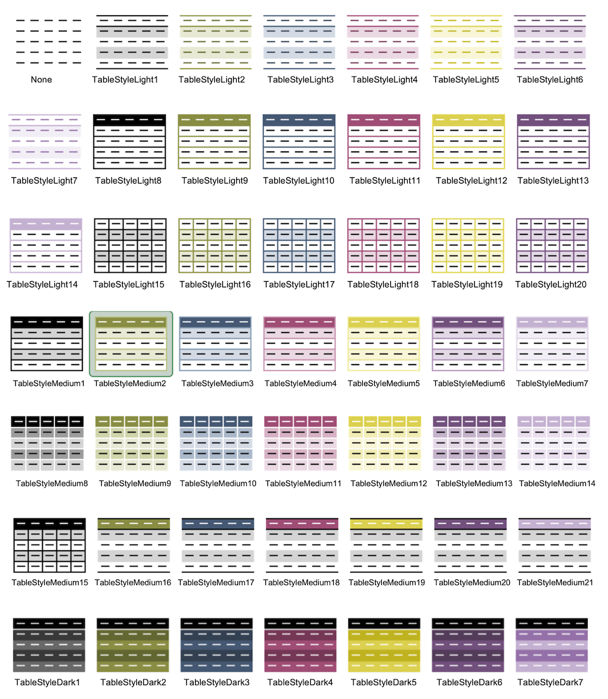

The as_excel() function relies on the openxlsx package for creating an Excel Workbook object in R. These objects can be saved using save_excel() or export_xlsx().
as_excel(
...,
sheet_names = NULL,
autofilter = TRUE,
autowidth = TRUE,
rows_zebra = TRUE,
cols_zebra = FALSE,
freeze_top_row = TRUE,
table_style = "TableStyleMedium2",
align = "center"
)
save_excel(xl, filename = NULL, overwrite = FALSE)data sets, use named items for multiple tabs (see Examples)
sheet names
create autofilter on columns in first row
automatically adjust columns widths
create banded rows
create banded columns
freeze the first row of the sheet
style(s) for each table, see below. This can also be a vector with the same length as ....
horizontal alignment of text
Excel object, as created with as_excel() (or manually with the openxlsx package)
file location to save Excel document to, defaults to a random filename in the current folder
overwrite existing file
For the argument table_style, use one or more of these table styles as character input. The default is TableStyleMedium2.

# creates a Workbook object
xl <- as_excel("this is a sheet" = mtcars,
"another sheet" = anscombe)
#> Warning: Row names for object 1 (32x11, sheet 'this is a sheet') added as first column 'rownames'
xl
#> A Workbook object.
#>
#> Worksheets:
#> Sheet 1: "this is a sheet"
#>
#> Custom column widths (column: width)
#> 1: 22.8, 2: 8, 3: 8, 4: 8, 5: 8, 6: 8, 7: 8, 8: 8, 9: 8, 10: 8, 11: 8, 12: 8
#>
#>
#> Sheet 2: "another sheet"
#>
#> Custom column widths (column: width)
#> 1: 8, 2: 8, 3: 8, 4: 8, 5: 8, 6: 8, 7: 8, 8: 8
#>
#>
#>
#> Worksheet write order: 1, 2
#> Active Sheet 1: "this is a sheet"
#> Position: 1
#>
# save it with save_excel() or export_xlsx()
library(openxlsx)
# add a new empty sheet
addWorksheet(wb = xl,
sheetName = "new sheet")
some_style <- createStyle(fontColour = "#9C0006", bgFill = "#FFC7CE")
addStyle(wb = xl,
sheet = 3,
style = some_style,
rows = 2:6,
cols = 1:6,
gridExpand = TRUE)